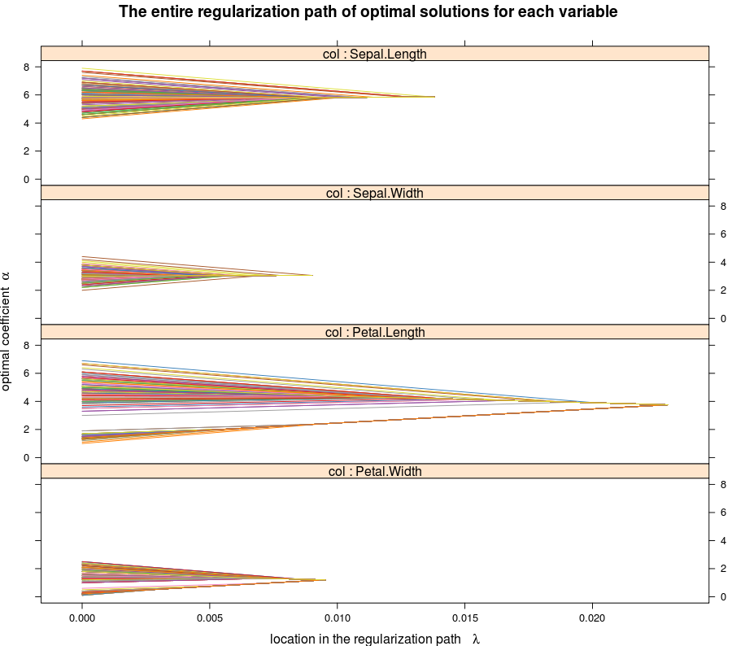
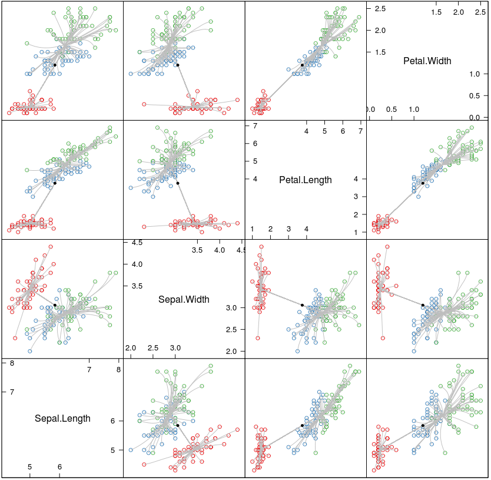
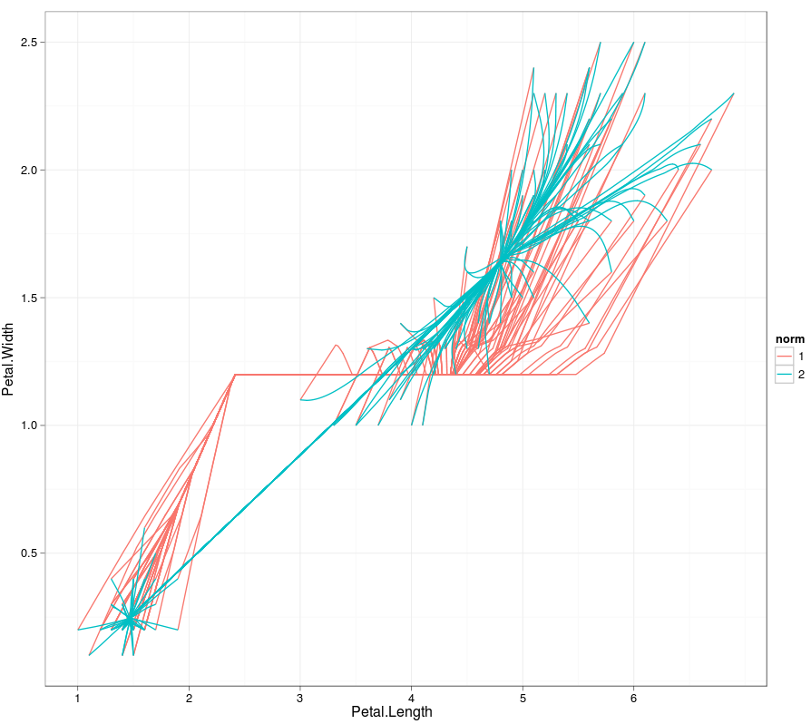
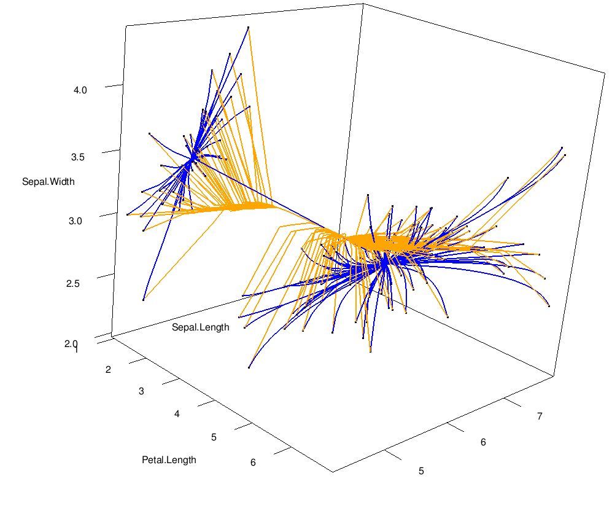

The clusterpath package provides an R/C++ implementation of the algorithms described in Hocking et al. Proceedings of the 28th International Conference on Machine Learning (2011). If you use this software, please cite the conference paper:
@InProceedings{Hocking-Clusterpath,
author = {Toby Hocking and Jean-Philippe Vert and Francis Bach and Armand Joulin},
title = {Clusterpath: an Algorithm for Clustering using Convex Fusion Penalties },
booktitle = {Proceedings of the 28th International Conference on Machine Learning (ICML-11)},
series = {ICML '11},
year = {2011},
editor = {Lise Getoor and Tobias Scheffer},
location = {Bellevue, Washington, USA},
isbn = {978-1-4503-0619-5},
month = {June},
publisher = {ACM},
address = {New York, NY, USA},
pages= {745--752},
}
To use the code, first install and load the package and its dependencies in R.
install.packages(c("Rcpp","ggplot2","latticeExtra"))
install.packages("clusterpath",repos="http://r-forge.r-project.org")
You can also install clusterpath from source if you have Subversion:
system("svn checkout svn://scm.r-forge.r-project.org/svnroot/clusterpath/pkg/clusterpath clusterpath")
system("R CMD INSTALL clusterpath")
library(clusterpath) ## calculate the l1 clusterpath breakpoints <- clusterpath.l1.id(iris[,1:4]) plot(breakpoints) |
 |
## calculate the weighted l2 clusterpath path <- clusterpath.l2(iris[,1:4],gamma=1) plot(path,groups=iris$Species) |
 |
## compare the 2 results. ## first find the multidimensional breakpoints: bpts4d <- castbreakpoints(breakpoints) ## concatenate the solution path data.frames: solutions <- rbind(bpts4d,path) ## plot the 2 paths using ggplot2: ggplot(solutions,aes(Petal.Length,Petal.Width))+ geom_path(aes(group=interaction(row,norm),colour=norm)) |
 |
## From examples(cluster3d), requires package rgl. ## Compares l1 and l2 paths in 3 dimensions. cluster3d(iris[,1:3],gamma=1) |
 |
There are two versions of clusterpath: one that depends on Rcpp and one that does not. Both contain the same functions for optimization and clustering. If one does not work, try installing the other:
install.packages("clusterpath",repos="http://r-forge.r-project.org")
library(clusterpath)
install.packages("clusterpathRcpp",repos="http://r-forge.r-project.org")
library(clusterpathRcpp)
Also, you may have to install a more recent version of R.
Below is a list of all the clusterpath solvers that I know of. Please write me an email if I missed anything!
| Author | Language | Norms | Algorithm | Code |
|---|---|---|---|---|
| Toby Dylan Hocking | R/C/C++ | 1, 2 | Active set primal | R packages clusterpath and clusterpathRcpp (R-Forge), source |
| Armand Joulin | MATLAB | Infinity | Franck-Wolfe | source zip |
| Eric C. Chi and Kenneth Lange | R/C | 2, Infinity | AMA, ADMM | R package cvxclustr (CRAN) |
| Gary K Chen, et al. | C++ (GPU) | 2 | Proximal distance | CONVEXCLUSTER |
| Daniel Duckworth | Python | 1, 2, Infinity | Coordinate ascent | cvxcluster |
Back to the R-Forge project page.
| W3C standard HTML5 written using emacs |